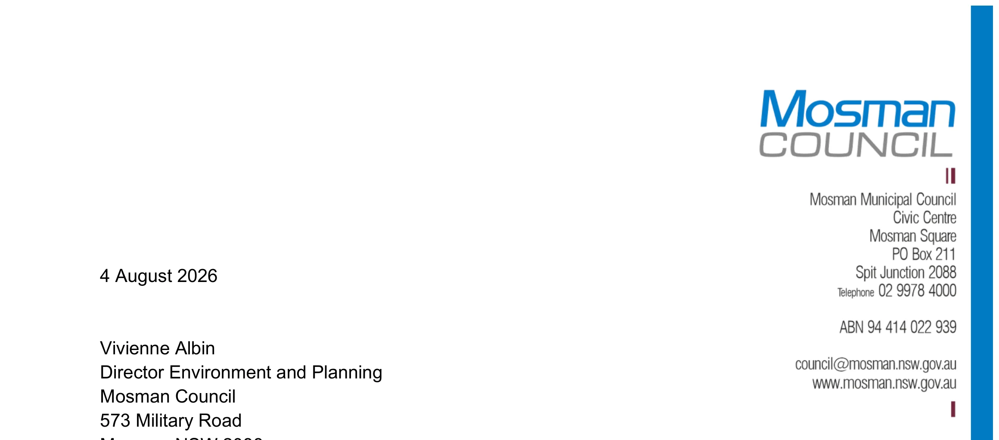

Water Cycle and Stormwater Management
L
Water Cycle and
Stormwater Management
August 2026
Attachment 1.1.12 Mosman Council
4 August 2026
Vivienne Albin Director Environment and Planning
573 Military Road Mosman NSW 2088
RE: Masterplan Area - Water Cycle and Stormwater Management
I have been requested to provide commentary on the Water Cycle and Stormwater Management within the Mosman Masterplan Area. Reference is made to the draft Mosman Masterplan Structure Plan prepared by SJB Architecture, dated 3 August 2026 (Drawing No. 06, Revision 08).
I am a professional engineer with a Bachelor of Civil Engineering and a Master of Science in Engineering. This assessment is informed by almost ten years of experience at Mosman Municipal Council reviewing and assessing engineering aspects of Development Applications, including the critiquing and evaluation of numerous stormwater management concepts and overland flow/flooding assessments. This assessment is also informed by over five years of experience in engineering consultancy in the construction industry, including stormwater quality and quantity management design and overland flow analysis, prior to joining Mosman Council.
The Department of Planning, Housing and Infrastructure’s Local Environmental Plan Making Guideline (July 2026) identifies that a Water Cycle and Stormwater Management Strategy may be required for greenfield sites, large-scale planning proposal sites, or sites located alongside riparian corridors, where the proposal needs to demonstrate that water quantity and quality can be managed within the proposed development.
The Mosman Masterplan proposal is not a greenfield site but rather considered as an urban renewal initiative. While the Masterplan represents a significant urban renewal initiative, any redevelopment is expected to occur on a gradual basis rather than as a single, large-scale site. A review of the Mosman Local Environmental Plan (LEP) 2012 Natural Resources Water Course Maps indicates that the Mosman Masterplan area does not contain any natural watercourse and hence a full riparian assessment and a broad water cycle and stormwater management strategy would not be relevant for the proposed Mosman Masterplan. For these developments, water quantity and quality outcomes would be more appropriately managed through Council's existing site-based controls rather than through a single broad masterplan-wide concept design.
A review of the Mosman Local Environmental Plan (LEP) 2012, Mosman Development Control Plan 2012 (amended December 2024) and Council's Policy for Stormwater Management in Mosman (amended December 2024) confirms that developers must consider both water quantity and water quality aspects of a proposed development. The Policy requires Permissible Site
August 2026
Attachment 1.1.12 Mosman Council

Discharge (PSD) requirements to be met and sets post-construction water quality targets for Gross Pollutants, Total Suspended Solids, Total Phosphorus and Total Nitrogen.
For developments in Mosman, water quantity is typically managed on site through a combination of on-site detention (OSD) and rainwater tanks whilst the water quality aspects are typically managed through in-ground stormwater treatment devices such as Gross Pollutant Traps (GPTs).
It is also important to note that the Masterplan Area in Mosman is already an established, predominantly impervious town centre precinct, where existing sites may not have water quantity and quality controls currently in place. As redevelopment occurs on a lot-by-lot basis under the Masterplan, Council's existing PSD and water quality requirements will be implemented by these sites. On this basis, development within the Masterplan Area will actively improve, rather than simply maintain, current water cycle and stormwater management outcomes.
Further, the Masterplan Area is already serviced by Mosman Council's existing stormwater drainage network which currently has over 30 Stormwater Quality Improvement Devices (SQIDs) which are maintained on a regular basis. The Section 7.12 contributions plan proposal that accompanies this Masterplan Proposal nominates funds for upgrades to existing SQIDs. This strategy would continue to supplement the water quality schemes employed within individual developments and further assist in improving the quality of stormwater runoff from areas outside future developments, such as parks, roads and footpaths.
Mosman Council is collaborating with neighbouring harbour Councils and the Sydney Coastal Councils Group who are currently working on the Outer Sydney Harbour CMP. As part of the process, studies have been initiated into stormwater pollution with future steps to include site specific or LGA- specific options for managing natural coastal assets, preventing litter and improving water quality.
Accordingly, having regard to: • Mosman Local Environmental Plan (LEP) 2012 • Mosman Development Control Plan 2012 (amended December 2024) • Council's Policy for Stormwater Management in Mosman (amended December 2024) • Council’s existing stormwater quality management program • the type and extent of development proposed under the Masterplan • the extensive stormwater quality and quantity management strategies submitted to Council as part of Development Applications; and • Mosman Council’s ongoing collaboration with neighbouring harbour Councils
it is my opinion that water quantity and quality within the Mosman Masterplan Area will continue to be capable of being managed on site, on a lot-by-lot basis, through a combination of rainwater tanks, on-site detention and proprietary water quality improvement devices. Consequently, no significant planning, water quantity or water quality constraints associated with stormwater management are anticipated.
Please don't hesitate to contact me if you have any questions.
Matthew Poon, BEng(Civil)(Hons), MEngSc(Civil) SENIOR CIVIL ENGINEER
August 2026
Attachment 1.1.12 Mosman Council
SJB Architecture (NSW) Pty Ltd ABN 20 310 373 425 ACN 081 094 724
Adam Haddow 7188 Emily Wombwell 10714 John Pradel 7004 Jonathan Tondi 11981 Nick Hatzi 9380
Drawing no. 06 Revision no. 08
Project no. 7218 Project Name Mosman Masterplan
Project address Mosman NSW Client 03/08/2026
STRUCTURE PLAN 0 70 140 210 280 350 Scale 1:7000 @ A1
St15
St15 St18
St10 St6
St4
St22 St15
St12
St6
St6 St8
St8
St12
St12 St6
St8
St8
St8 St8
St8
St8 St8
St4 St3
St3 St3
St4 St4 St4 St4
St5
St5
St8
St8 St6
St12 St12
St8 St8
St6 St6 St6 St6
St12 St12 St15 St15 St15
St8
St8
St8
St18 St18 St15
St18
St12
St12
St12
St8
St12
St12
St12
St12
St12
St18 St12
St12 St12
St10
St12 St12 St20
St8 St8 St8 St6
St6
St6
St6
St6
St6 St3
St3
St3
St6
St6
St6
St12
St12
St12
St12
St12
St12
St12
St8
St8
St8
St6
St6 St3
St8
St8 St8
St8
St8 St8 St10
St8
St6 St6 St6 St6
St6 St3
1500sqm 2000sqm
40 40 40 40 40
40
40
40
40
40 40 40 40 40 40
40
40
40
40
Sacred Hear Catholic Primary School
Mosman Public School
Allan Border Oval
Middle Habour Public School COWLES RD
ART GALLERY WAY
GOULDSBURY ST
BELMONT RD
THE CRESCENT
COWLES RD
COWLES RD
COWLES RD
HARBOUR ST
HARBOUR ST
WUNDA RD NOBLE ST
BRADY ST
OURIMBAH RD
OURIMBAH RD
AWABA ST AWABA ST
KILLARNEY ST AWABA LN
AMIENS AVE
MITCHELL RD BAPAUME RD STANTON LN
STANTON RD
WARRINGAH RD
PARRIWI RD
BICKELL RD
HORDERN PL HEYDON ST
HORDERN LN
SPIT RD
CIVI LN
SPIT RD
RAWSON ST
PUNCH LN
SPIT RD
PUNCH ST
CLIFFORD ST
MORUBEN RD
HORSNELL LN FIELD WAY GURRIGAL ST VISTA ST
VISTA ST
MYAHGAH RD
BOND ST
LANG ST
LANG ST
SNELL ST
MACKIE LN
HALE RD
HALE RD MACPHERSON ST
ERITH ST
PRINCE ST
MELROSE ST
MILITARY RD MILITARY RD
MILITARY RD MILITARY RD
MILITARY RD
EARL ST
OURIMBAH RD
PRINCE ST PRINCE ST
BELMONT RD BELMONT RD
GLOVER ST GLOVER ST LINDSAY LN
CABRAMATTA RD LINDSAY LN
TWIN TOWERS WALK
BARDWELL RD
BARDWELL RD
WUDGONG ST
WUDGONG ST
CARDINAL ST
CARDINAL ST
CARDINAL ST
ROSEBERY ST COUNTESS ST
RAWSON ST
MORUBEN RD
KEY
Boundary Open space Heritage items School Bus stop Relocated bus stop B-line Bus lane Heritage conservation areas De-listed heritage conservation areas Privately owned publicly accessible open space School grounds open space Retained street vegetation Retained mature tree canopy Proposed street canopy Proposed public open space Pedestrian only zones Shared zones Active frontage - 0m Front setback - 1.5m Front setback - 3m Front setback - 4m Front setback - 4.5m Front setback - 5m Front setback - 8m Rear setback - 9m Streetwall height - 2 storey Streetwall height - 6 storey Key site
Proposed crossing
Existing through site link Proposed through site link Green pedestrian link Indicative land dedication Proposed road
No exit
40 40km/h speed limit Proposed signalised intersection Existing public parking Proposed basement access Calm streets
Closed off roads
Traffic direction
Pedestrian bridge
Peel Off Corners
Low-density residential Medium-density residential High-density residential Local centre Infrastructure Retail anchor
Community anchor Sporting anchor
Educational anchor
Pick-up drop-off area
New playground
August 2026
Attachment 1.1.12 Mosman Council